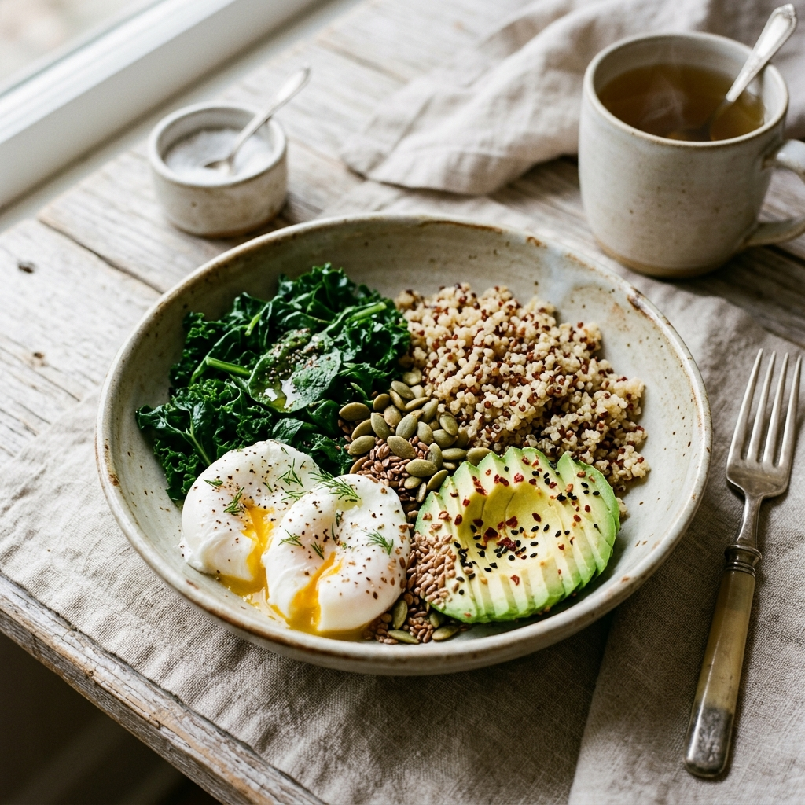

Holistic PCOS & PCOD Wellness Designed for You
Manage insulin resistance, balance your hormones, and sync your life with your menstrual cycle. Get customized dietitian-approved recipe suggestions, track symptoms day-by-day, and connect directly with certified gynecologists, nutritionists, and trainers.

Our Holistic Wellness Pillars
A balanced lifestyle is the key to managing PCOS. Nutrifit targets the root causes through three core pillars of wellness.
PCOS-Friendly Nutrition
Calculate your precise caloric limits and macro ratios. Receive daily recommendations for breakfasts, lunches, and dinners tailored to lower insulin levels and curb hormonal cravings.
Cycle & Phase Tracker
Log period flow levels and physical symptoms (fatigue, acne, bloating). Track your progression through Menstrual, Follicular, Ovulatory, and Luteal phases with specialized seed-cycling guidance.
Direct Professional Access
Easily browse certified experts. Book online consultations with PCOS-specialist gynecologists, registered dietitians, and yoga trainers to keep your treatment on the right track.
Understanding Your Body
Polycystic Ovary Syndrome (PCOS) is a common hormonal disorder affecting reproductive-aged women. It often involves insulin resistance, higher levels of androgen hormones, and irregular menstrual cycles.
Through targeted nutrition (low glycemic load, high iron, plenty of magnesium and zinc), seed cycling (alternating pumpkin/flax and sesame/sunflower seeds), and gentle, phase-synced workouts, you can significantly alleviate symptoms and restore natural biological balance.
Join Nutrifit TodayReal PCOS Relief starts with Nutrition
"Syncing my meals and workouts to my menstrual cycle completely changed how I manage my fatigue and hormone-related acne. Nutrifit helped me figure out exactly what my body needed at each phase of the month."
- Jiya, Nutrifit User